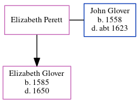

Elizabeth Glover (née Perett)
[ Home ] | [ Calendar ] | [ Surnames Index ] | [ Errors ] | [ Family History ]Elizabeth Perett was the 11 times great-grandmother of Nigel Horne and married John Glover (with whom she had 1 child, Elizabeth) in Nonington, Kent, England on 16 Oct 15801.
Children
- Elizabeth was born in 1585
Citations
- Kent, East Kent marriage index 1538-1754 - Findmypast
Media
Kent, East Kent marriage index 1538-1754 Transcription - GBPRS-EASTKENT-MAR-075345-1
Family Tree
Map
Generated by ged2site. Last updated on Jul 3, 2024